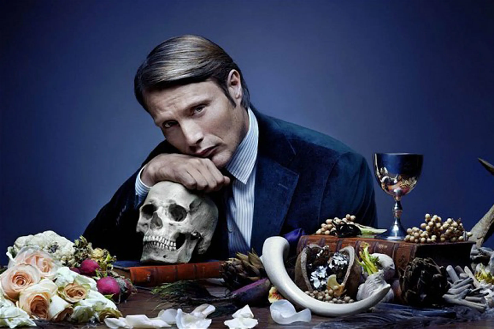
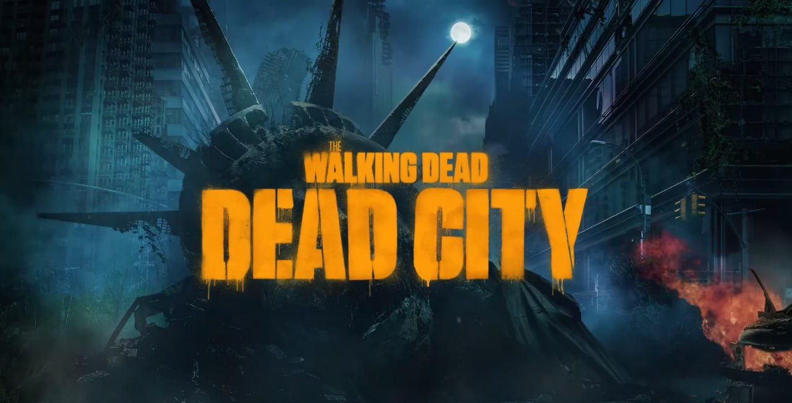

Paranormal
The series tackles Dr. Refaat, a cynical Hematologist with a dark sense of humor, who goes through a “journey of doubt” as his world is turned upside down after his lifelong scientific convictions are questioned. The plot commences in 1969, as Refaat Ismail enters his 40s, and begins to experience a series of paranormal activities. Throughout the season, Refaat is accompanied by his university colleague, Maggie, as they enter the paranormal world and try to save their loved ones from the immense danger that surrounds them. The series is produced by Mohamed Hefzy and Amr Salama, who is also the creator and the director.

Stranger Things
Stranger Things is an American science fiction horror drama television series created by the Duffer Brothers for Netflix. Produced by Monkey Massacre Productions and 21 Laps Entertainment, the first season was released on Netflix on July 15, 2016. The second and third season followed in October 2017 and July 2019 respectively, and the fourth season aired in two parts in May and July 2022. In February 2022, Stranger Things was renewed for a fifth and final season.

The Haunting Of Hill House
The Haunting of Hill House is an American supernatural horror drama streaming television miniseries created and directed by Mike Flanagan, produced by Amblin Television and Paramount Television, for Netflix, and serves as the first entry in The Haunting anthology series. It is loosely based on the 1959 novel of the same name by Shirley Jackson. The plot alternates between two timelines, following five adult siblings whose paranormal experiences at Hill House continue to haunt them in the present day, and flashbacks depicting events leading up to the eventful night in 1992 when the family fled from the mansion. The ensemble cast features Michiel Huisman, Elizabeth Reaser, Oliver Jackson-Cohen, Kate Siegel, and Victoria Pedretti as the siblings in adulthood, with Carla Gugino and Henry Thomas as parents Olivia and Hugh Crain, and Timothy Hutton appearing as an older version of Hugh

The Nun
The Nun is a 2018 American gothic supernatural horror film directed by Corin Hardy and written by Gary Dauberman, from a story by Dauberman and James Wan.[2][3] It serves as a spiritual spin-off to The Conjuring 2 and is the fifth installment in The Conjuring shared universe. The film stars Taissa Farmiga, Demián Bichir and Jonas Bloquet, with Bonnie Aarons reprising her role as the Demon Nun, an incarnation of Valak, from The Conjuring 2. The plot follows a Roman Catholic priest and a nun in her novitiate as they uncover an unholy secret in 1952 Romania. It is followed by a sequel The Nun II, released in 2023.

Hannibal
Hannibal is an American psychological horror-thriller television series developed by Bryan Fuller for NBC. The series is based on characters and elements appearing in Thomas Harris' novels Red Dragon (1981), Hannibal (1999), and Hannibal Rising (2006) and focuses on the relationship between Federal Bureau of Investigation (FBI) special investigator Will Graham (Hugh Dancy) and Dr. Hannibal Lecter (Mads Mikkelsen), a forensic psychiatrist destined to become Graham's most cunning enemy and at the same time, the only person who can understand him.

The Walking Dead
The Walking Dead is an American post-apocalyptic horror drama television series based on the comic book series of the same name by Robert Kirkman, Tony Moore, and Charlie Adlard. Together, the show and the comic book series form the core of The Walking Dead franchise. The series features a large ensemble cast as survivors of a zombie apocalypse trying to stay alive under near-constant threat of attacks from zombies known as "walkers". With the collapse of modern civilization, these survivors must confront other human survivors who have formed groups and communities with their own sets of laws and morals, sometimes leading to open conflict between them. The series is the first television series within The Walking Dead franchise.